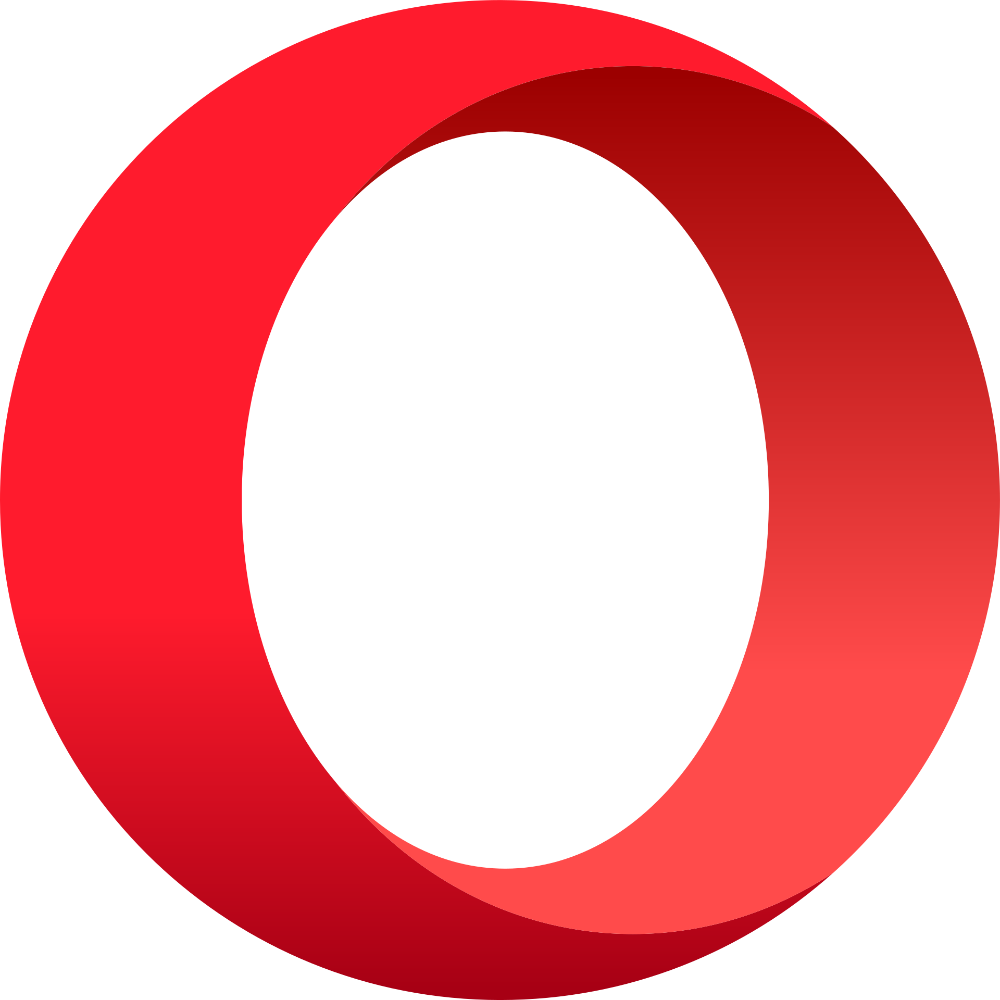

Расширение браузера

WBin
45+ пользователейОсновной фокус разработки: мультиинструмент для работы с маркетплейсами. Развиваем направления «Акции», «Финотчеты», «Реклама» и «Ozon соинвест».
Реклама и аналитика
Парсинг рекламных кампаний, артикулов и метрик из личного кабинета.
Финотчеты и акции
Инструменты для регулярных финотчетов и контроля акционных активностей.
Мультиплатформенный фокус
Развитие функционала под Wildberries и Ozon в рамках одного набора инструментов.